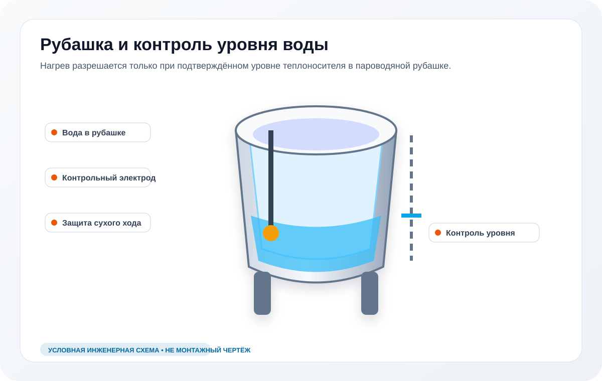

Уровень воды
Проверяем рубашку и признаки неправильного заполнения.
Пищеварочный котел показывает H2O, сухой ход или блокирует нагрев: проверка уровня воды в рубашке, датчика, электрода и автоматики на объекте.
Визуальная схема узла
Нагрев зависит от подтверждённого уровня теплоносителя и исправности защитного контура.

Изображение условное: оно объясняет состав системы, но не заменяет электрическую схему, руководство конкретной модели и измерения на оборудовании.
Когда котел показывает H2O, сухой ход или блокирует нагрев, часто нужно проверить уровень воды в паровой рубашке, электрод контроля, датчик, автоматику и последствия запуска без воды.
Риск: срабатывает защита, нагрев не запускается, ТЭНы перегреваются при неправильном запуске.
Проверяем рубашку и признаки неправильного заполнения.
Смотрим цепь контроля уровня и проводку.
Отделяем реальный сухой ход от ошибки контроллера.
Формула заявки
Симптом или код → возможная причина → риск простоя кухни → диагностика → звонок / WhatsApp / форма.
Сравните проявление с соседними сценариями: нагрев, течь, электрика, код ошибки, H2O или особенности Abat КПЭМ. Так проще сразу открыть страницу по вашей ситуации.
Кластер котлов
Главная страница кластера: ремонт, диагностика, выезд и документы.
Открыть сценарий →
Кластер котлов
ТЭНы, контактор, датчики, питание и паровая рубашка.
Открыть сценарий →
Кластер котлов
Сливной кран, прокладки, рубашка, клапаны и соединения.
Открыть сценарий →
Кластер котлов
УЗО, пробой ТЭНа, силовая цепь, влага и контактор.
Открыть сценарий →
Кластер котлов
E01, E02, E04, H2O, E17 и связь кода с моделью.
Открыть сценарий →
Кластер котлов
КПЭМ, мешалка, опрокидывание, рубашка и ошибки контроллера.
Открыть сценарий →
Укажите модель и проблему. Сразу скажем, как действовать по смене и насколько срочный выезд нужен.
Если есть запах гари, выбивает автомат, течь усиливается или код возвращается после перезапуска, лучше остановить котел до диагностики.
Фото шильдика, дисплея или места неисправности, модель, код ошибки, адрес объекта и описание: когда появляется проблема.
Да. Выезд на объект, договор, безналичная оплата, акт и гарантийное подтверждение после работ.
Нет. Можно отправить симптом: не греет, течет, H2O, выбивает автомат, не запускается. Код помогает быстрее подготовиться к выезду.